방송통신산업기사 (2007-09-02 기출문제)
1과목: 디지털 전자회로
1. 다이오드를 사용하여 그림과 같은 회로를 구성하고 입력 전압(Vi)을 -6[V]에서 6[V]까지 변화시킬 때 출력전압 (Vo)의 변화는? (단, 다이오드의 Cutin 전압은 0.6[V]이다.)
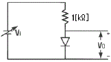
- 0.6[V] ~ 6[V]
- -6[V] ~ 6[V]
- -6[V] ~ 0[V]
- -6[V] ~ 0.6[V]
(정답률: 알수없음)

2. 그림과 같은 연산 증폭기에서 V1 = 0.1[V], V2=0.2[V], V3 = 0.3[V]일 때 출력전압 Vo[V]는?
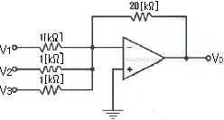
- -2
- -6
- -12
- -18
(정답률: 알수없음)
3. 다음과 같은 회로가 수행할 수 있는 논리 동작은? (단, 부논리이며 A, B는 입력단자이다.)
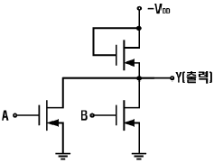
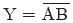
- Y=AB
- Y=A+B
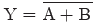
(정답률: 알수없음)
4. 전파정류기의 DC 출력 전력[W]은 반파정류기 전력의 몇 배 가 되는가?
- 2
- 4
- 8
- 16
(정답률: 알수없음)
5. 그림과 같은 논리회로의 출력 D는?
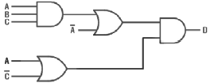
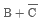
- ABC
- AB+BC
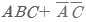
(정답률: 알수없음)
6. 이미터 접지일 때 전류증폭율이 각각 hFE1, hFE2 인 두개의 트랜지스터 Q1과 Q2를 그림과 같이 접속하였을 때의 컬렉터 전류 IC는?
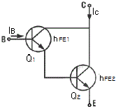
- IC = hFE1ㆍhFE2ㆍIB
- IC = (hFE1 / hFE2)ㆍIB
- IC = hFE2(hFE2+1)IB
- IC = hFE1ㆍIB + hFE2(hFE2+1)ㆍIB
(정답률: 알수없음)
7. 다음 회로에서 저항 rE 의 역할로 옳은 것은?
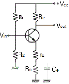
- 전압이득과 왜율을 모두 감소시킨다.
- 전압이득을 증가시킨다.
- 전압이득은 증가시키고 왜율은 감소시킨다.
- 전압이득은 감소시키고 왜율은 증가시킨다.
(정답률: 알수없음)
8. 다음 그림과 같이 NAND 게이트가 연결되어 있다. 이 회로 와 등가인 게이트는?
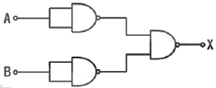
- OR 게이트
- AND 게이트
- NOR 게이트
- NAND 게이트
(정답률: 알수없음)
9. JK 플립플롭을 사용하여 D형 플립플롭을 만들려면 외부 결선은 어떻게 하는 것이 옳은가?
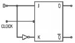
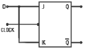
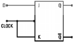
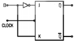
(정답률: 알수없음)
10. 다음은 수정편의 리액턴스 특성이다. 발진에 이용되는 주파수 범위는?
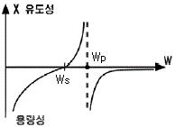
- ωs＜ω＜ωP
- ωP＜ω
- ωS＞ω
- ωS=ω
(정답률: 알수없음)
11. 그림과 같은 회로에서 기전력 E를 가하고 SW를 ON 하였을 때 저항 양단의 전압 VR은 t초 후에 어떻게 되는가?
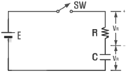
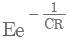
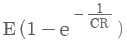
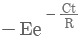
- E/e
(정답률: 알수없음)
12. 1[㎑] 신호파로 710[㎑] 반송파를 진폭 변조했을 때 피변조파에 포함되지 않는 주파수[㎑]는?
- 700
- 709
- 710
- 711
(정답률: 알수없음)
13. 트랜지스터를 증폭작용에 이용할 경우의 동작 상태는?
- 포화상태
- 활성상태
- 차단상태
- 역할성상태
(정답률: 알수없음)
14. RC 결합 저주파 증폭회로에서 낮은 주파수의 이득이 감소되는 주 원인은?
- 병렬 커패시턴스 때문에
- 이미터의 저항 때문에
- 컬렉터의 저항 때문에
- 결합 커패시턴스의 영향 때문에
(정답률: 알수없음)
15. 다음 콜피츠 발진회로의 발진주파수를 나타내는 식은?
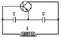
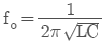
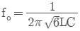
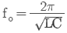
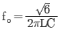
(정답률: 알수없음)
16. FM 방식에서 변조를 깊게 하여 최대 주파수 편이가 △f 라고 했을 때 주파수 대역폭 B는?
- B=△f
- B=2ㆍ△f
- B=3ㆍ△f
- B=4ㆍ△f
(정답률: 알수없음)
17. 다음 중 DC 결합과 AC 결합이 함께 사용되는 발진기는?
- 비안정 멀티바이브레이터
- 단안정 멀티바이브레이터
- 쌍안정 멀티바이브레이터
- 블로킹 발진기
(정답률: 알수없음)
18. 두 입력을 비교하여 A＞B 이면 출력이 1이고, A≤B 이면 출력이 0 이 되는 논리회로를 설계하고자 한다. 이 조건을 만족하는 논리식은?
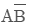
- AB
- A+B
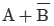
(정답률: 알수없음)
19. 다음 그림에서 합(s)에 대한 논리식이 옳은 것은?
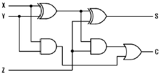
- (x+y)⊕z
- (x⊕y)⊕z
- xz+y
- xz⊕yz
(정답률: 알수없음)
20. 다음 중 소비전력이 가장 적은 소자는?
- TTL
- ECL
- RTL
- CMOS
(정답률: 알수없음)
2과목: 방송통신 기기
21. 다음 중 방송국의 방송신호 편집설비와 가장 거리가 먼것은?
- 문자발생기
- 기준시간교정기(TBC)
- 비디오녹화기(VCR)
- 변조기
(정답률: 알수없음)
22. 다음 중 위성방송을 위하여 반드시 필요한 시설로 볼 수 없는 것은?
- 이동형 송신국
- 관제 제어국
- 파라볼라 안테나 및 저잡음 컨버터
- 송신국
(정답률: 알수없음)
23. 국내 위성(무궁화위성) 방송에서 사용하고 있는 전파의 편파는?
- 수직편파
- 수평편파
- 우선원편파
- 좌선원편파
(정답률: 알수없음)
24. 위성방송시스템의 특징을 지상파 방송시스템과의 비교 설명으로 틀린 것은?
- 보다 선명한 영상 서시스 실현이 가능하다.
- 강우 감쇠의 영향이 줄어든다.
- 전국에 단일 방송파로 동일한 방송을 제공할 수 있다.
- HDTV 문자다중방송 등 뉴미디어 방송의 실현에 보다 유리하다.
(정답률: 알수없음)
25. 위성 방송용 수신장치는 수신 안테나, 컨버터, 튜너 및 TV로 구성되어 있다. 이 때 컨버터에서 출력되는 신호의 주파수 범위로 적합한 것은?
- 약 1.8 ~ 3.2GHz
- 약 1.0 ~ 1.3GHz
- 약 800 ~ 950MHz
- 약 380 ~ 530MHz
(정답률: 알수없음)
26. 임의의 증폭회로에서 입력단과 출력단에서의 전력값을 측정했더니 각각 0.1mW, 20mW 였다. 이 회로의 증폭도는 약 몇 dB인가?
- 13
- 15
- 23
- 25
(정답률: 알수없음)
27. 디지털 방송에서는 수신 전계강도가 일정값 이하로 떨어지면 화면이 전혀 나오지 않는 현상이 일어난다. 이것을 무슨 효과라고 하는가?
- 클리프효과
- 고스트효과
- 에코효과
- 다중경로 효과
(정답률: 알수없음)
28. 영상신호의 전송을 위해서는 넓은 대역폭이 요구된다. 만일 30[kHz]의 대역폭을 갖는 신호전송시 PCM 시스템에서 요구되는 최소의 표본화 주파수[kHz]는?
- 30
- 40
- 60
- 80
(정답률: 알수없음)
29. FM 방송의 기본적인 방송장비에 해당하지 않는 것은?
- FM Transmitter
- Modulation Monitor
- Master Audio Control Console
- Video Switcher
(정답률: 알수없음)
30. 비디오 특성 측정에 사용되는 시험 패턴 중 멀티버스트 신호는 다음 중 어느 용도에 가장 적합한가?
- 주파수대 위상 측정
- 주파수대 진폭 특성 측정
- 과도 잡음 특성 측정
- 비직선 왜곡 측정
(정답률: 알수없음)
31. 다음 전송케이블 중 가장 큰 대역폭을 갖는 것은?
- 평형대케이블
- 동축케이블
- 광케이블
- UTP케이블
(정답률: 알수없음)
32. 다음 중 채널용량을 증대하기 위한 설명으로 틀린 것은?
- 대역폭을 크게 한다.
- 신호의 세기를 증가시킨다.
- 잡음의 크기를 줄인다.
- 신호대 잡음비(S/N)를 감소시킨다.
(정답률: 알수없음)
33. 다음 중 디지털 변ㆍ복조 방식에 대한 설명으로 틀린 것은?
- ASK는 디지털 신호에 각각 다른 진폭을 대응시키는 방식이다.
- ASK는 신호대 잡음비는 PSK보다 나쁘다.
- FSK는 디지털신호에 각각 다른 위상을 대응시키는 방식이다.
- QAM방식은 반송파의 진폭과 위상을 동시에 변조하는 방식이다.
(정답률: 알수없음)
34. AM 및 FM 수신기의 특성 측정 중 수신기에 일정한 입력 신호를 인가할 때 재조정 없이 얼마나 오래 동안 일정한 출력을 얻을 수 있는가를 나타내는 것은?
- 감도
- 선택도
- 충실도
- 안정도
(정답률: 알수없음)
35. 다음 중 아날로그 NTSC TV 전파방식으로 옳은 것은?
- LSB
- SSB
- DSB
- VSB
(정답률: 알수없음)
36. 방송용 카메라에 많이 사용되는 CCD에 대한 설명으로 틀린 것은?
- 촬상관에 비해 S/N비가 높다.
- 강한 광선에 의해 소자가 손상되는 burn-in 현상이 없다.
- 물결무늬 현상이 잘 생기지 않는다.
- 소형, 경량 및 저소비 전력화가 용이하다.
(정답률: 알수없음)
37. 다음 중 NTSC 방송방식의 컬러 버스트 신호의 주파수[MHz]로 적합한 것은?
- 1.58
- 2.58
- 3.58
- 4.58
(정답률: 알수없음)
38. 다음 중 야기 안테나의 주 용도는?
- TV신호 수신시
- 위성신호 수신시
- 위선신호 송신시
- 위성 중계시
(정답률: 알수없음)
39. 방송의 디지털 신호를 측정기로 측정을 하였더니 1초에 9600개의 비트 신호를 수신하였다면 이 수신기의 비트레이트[bps]는 얼마인가?
- 2400
- 4800
- 9600
- 12400
(정답률: 알수없음)
40. 다음 중 아날로그 TV방송을 하는 방송국에서 갖추어야 할 필수적인 장비가 아닌 것은?
- TV신호 발생기
- 파형 분석기
- 벡터스코프
- 비트에러 측정기
(정답률: 알수없음)
3과목: 방송미디어 개론
41. 전파의 속도는 매질의 어느 것에 의하여 변화되는가?
- 유전율과 밀도
- 밀도와 투자율
- 도전율과 유전율
- 유전율과 투자율
(정답률: 알수없음)
42. 뉴미디어의 바람직한 기술적 특성이 아닌 것은?
- 상호작용의 쌍방향성
- 탈대중적 다양성
- 고도의 상업성
- 속보성
(정답률: 알수없음)
43. 멀티미디어의 시청자 요구에 의한 영상 서비스를 의미하는 약어는?
- VOA
- VOB
- VOC
- VOD
(정답률: 알수없음)
44. 영상의 주사방식에는 비월주사와 순차주사의 2가지 방식이 있다. 순차주사에 비해 비월주사의 주된 이점은?
- 화면의 해상도가 좋다.
- 주사 기간이 작아진다.
- 화면의 깜박거림이 적다.
- 주사선의 동요가 적다.
(정답률: 알수없음)
45. 다음 중 색의 3요소가 아닌 것은?
- 색상
- 명도
- 채도
- 혼합도
(정답률: 알수없음)
46. 다음 중 디지털 지상파방송의 특징으로 알맞지 않은 것은?
- 고품질의 방송이 가능하다.
- 양방향 서비스를 제공할 수 있다.
- 주파수 활용 효율성이 더욱 높아진다.
- 다채널 서비스를 제공할 수 없다.
(정답률: 알수없음)
47. 인터넷 방송의 특징으로 가장 적합하지 않은 것은?
- 전 세계를 대상
- VOD 개념의 도입
- 제작과정의 복잡성
- 이용자 위주의 방송
(정답률: 알수없음)
48. 다음 중 가상현실기술의 3요소와 관계가 가장 먼 것은?
- 인간동작의 감지기술
- 감각정보의 합성기술
- 가상에서의 표출
- 영상의 보존기술
(정답률: 알수없음)
49. 다음 중 객체(영상)기반 동영상 압축방식은?
- MPEG-1
- MPEG-2
- MPEG-4
- MPEG-7
(정답률: 알수없음)
50. 특수 postscript 프린터로 인쇄되는 텍스트나 그래픽용에 이용되는 파일의 확장자로 맞는 것은?
- AVI
- EPS
- PCD
- PCX
(정답률: 알수없음)
51. 다음 중 멀티미디어 기술을 가능하게 하는 요소가 아닌것은?
- 저장매체 기술
- 디지털 비디오 기술
- 하이퍼 미디어 기술
- 매스미디어 기술
(정답률: 알수없음)
52. NTSC TV 방식에서 TV 화면 하나를 만들기 위해서는 1초에 몇 개의 주사선이 필요한가?
- 525
- 5250
- 1⑤00
- 15750
(정답률: 알수없음)
53. 다음 중 멀티미디어의 사운드 파일 형식이 아닌 것은?
- MP3
- WAV
- MIDI
- JPG
(정답률: 알수없음)
54. 동영상정보의 압축방법으로 알맞지 않는 것은?
- 화면내 상관관계를 이용한다.
- 화면간 상관관계를 이용한다.
- 주사선의 시간을 이용한다.
- 부호의 발생확률이 서로 다름을 이용한다.
(정답률: 알수없음)
55. 다음 중 아날로그 컬러텔레비전 방식이 아닌 것은?
- TBC
- SECAM
- PAL
- NTSC
(정답률: 알수없음)
56. TV 방송에서 문자다중 방송을 위해 사용하는 부분은?
- 음성신호에 중철
- 영상신호 발생기간
- 수평귀선기간
- 수직귀선기간
(정답률: 알수없음)
57. 다음 중 양자화를 바르게 설명한 것은?
- 원신호의 증폭화
- 샘플링 주파수의 선정
- 샘플링 된 신호를 디지털 양으로 표시
- 디지털 신호의 아날로그화
(정답률: 알수없음)
58. 다음 중 TV 송신 안테나를 지상고가 높은 곳에 설치하는 주된 이유는?
- 수신지역을 넓게 하기 위해서
- 위험하여 사람의 접근을 방지하기 위해서
- 송신기의 출력을 높이기 위해서
- 환경적으로 업무에 집중하기 위해서
(정답률: 알수없음)
59. 사건 현장에서 방송사로 실황을 중계하려 한다. 다음 중 가장 현장감이 있고 빠른 중계 방식은?
- 마이크로웨이브나 SNG를 사용한 직접 중계방식
- 중계차 녹화 중계방식
- ENG 카메라 녹화 중계방식
- STIL 사진 중계방식
(정답률: 알수없음)
60. 다음 중 비디오텍스의 전송 기술 방식이 아닌 것은?
- 알파 모자이크 방식
- 알파 포토그래픽 방식
- 알파 지오메트릭 방식
- MH 부호화 방식
(정답률: 알수없음)
4과목: 전자계산기 일반 및 방송설비기준
61. 다음 중 자외선을 이용하여 내용을 지울 수 있는 ROM은?
- 마스크 ROM
- EEROM
- PROM
- EPROM
(정답률: 알수없음)
62. UNIX 의 운영체제(OS)에 주로 사용된 언어는?
- 어셈블리 언어
- BASIC 언어
- C 언어
- LISP 언어
(정답률: 알수없음)
63. 컴퓨터가 프로그램을 수행하고 있는 동안 컴퓨터의 내부나 외부에서 응급상태가 발생하여 현재 수행 중인 프로그램을 일시적으로 중지하고 응급사태를 처리하는 기법은?
- DMA
- Time sharing
- Subroutine
- Interrupt
(정답률: 알수없음)
64. 마이크로컴퓨터의 직렬 입ㆍ출력 인터페이스가 아닌 것은?
- SIO
- USART
- USB
- PPI
(정답률: 알수없음)
65. 다음 중 이항 연산이 아닌 것은?
- OR
- AND
- Complement
- 산술 연산
(정답률: 알수없음)
66. 데이터 접근방법이 순차적으로 접근되는 기억장치로서 가장 적합하지 않은 것은?
- FIFO 메모리
- LIFO 메모리
- 자기 테이프
- HDD
(정답률: 알수없음)
67. 명령 사이클 중에서 일반적으로 프로그램 카운터(PC) 값이 증가되는 사이클은?
- fetch cycle
- indirect cycle
- execute cycle
- direct cycle
(정답률: 알수없음)
68. 다음 중 현재 수행중인 명령어를 기억하는 레지스터는?
- MAR(Memory Address Register)
- IR(Instruction Register)
- PC(Program Counter)
- Accumulator
(정답률: 알수없음)
69. 다음 16진수 73C.4E 를 10진수로 변환한 것 중 가장 근사치는?
- 185.23
- 1852.3⑤
- 18523.⑤
- 123.25
(정답률: 알수없음)
70. 다음 주소 지정 방식(Addressing Mode) 중에서 프로그램 카운터에 명령어의 주소부분을 더해서 실제 주소를 구하는 방식은?
- 직접 번지 방식
- 즉시 번지 방식
- 상대 번지 방식
- 레지스터 번지 방식
(정답률: 알수없음)
71. 다음 중 방송편성에 관한 의견제시 또는 시정요구를 할 수 있는 기구는?
- 방송위원회
- 시청자위원회
- 방송심의위원회
- 방송윤리위원회
(정답률: 알수없음)
72. 다음 중 공중선전력의 표시방법이 틀린 것은?
- 평균전력(PY)
- 첨두포락선전력(PX)
- 반송파전력(PZ)
- 직류전력(DP)
(정답률: 알수없음)
73. 지상파방송사업을 하고자 할 때 어느 기구의 추천을 받아야 하는가?
- 정보통신부
- 문화관광부
- 방송위원회
- 통신위원회
(정답률: 알수없음)
74. 변조의 결과로 생기는 주파수대폭의 하한주파수 미만의 부분과 상한주파수를 초과하는 부분에서 각각 발사되는 평균전력이 따로 정하는 것을 제외하고 각각 0.5퍼센트와 같은 주파수대폭을 무엇이라 하는가?
- 필요주파수대폭
- 점유주파수대폭
- 주파수허용편차
- 스퓨리어스발사
(정답률: 알수없음)
75. 당해 무선통신업무를 실용에 옮길 목적으로 시험적으로 개설하는 무선국은?
- 실험국
- 실용국
- 실용화시험국
- 시험용실용국
(정답률: 알수없음)
76. 다음 중 방송법에 의한 방송사업자의 종류가 아닌 것은?
- 유선방송사업자
- 위성방송사업자
- 지상파방송사업자
- 방송채널사용사업자
(정답률: 알수없음)
77. 다음 중 전송망사업의 신청 형태는?
- 허가제
- 신고제
- 인가제
- 등록제
(정답률: 알수없음)
78. 시청자위원회의 구성 및 운영에 관한 사항은 무엇으로 정하는가?
- 대통령령
- 국무총리령
- 선로증폭기
- 송신증폭기
(정답률: 알수없음)
79. 다음 중 공동시청 안테나 시설에 사용되는 설비가 아닌 것은?
- 수신안테나
- 레벨조정기
- 선호증폭기
- 송신증폭기
(정답률: 알수없음)
80. 방송법에서 방송의 공적 책임에 관한 사항이 아닌 것은?
- 범죄 및 부도덕한 행위나 사행심을 조장해서는 안된다.
- 타인의 명예를 훼손하거나 관리를 침해해서는 안된다.
- 지역간ㆍ세대간ㆍ계층간ㆍ성별간의 갈등을 조장해서는 안된다.
- 민주적 기본질서를 존중할 필요는 없다.
(정답률: 알수없음)